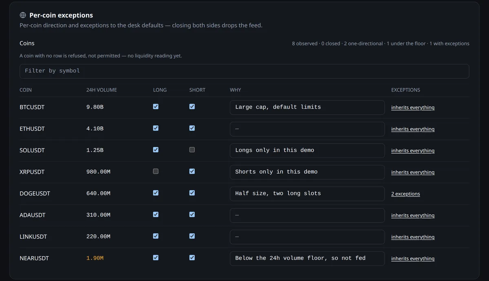
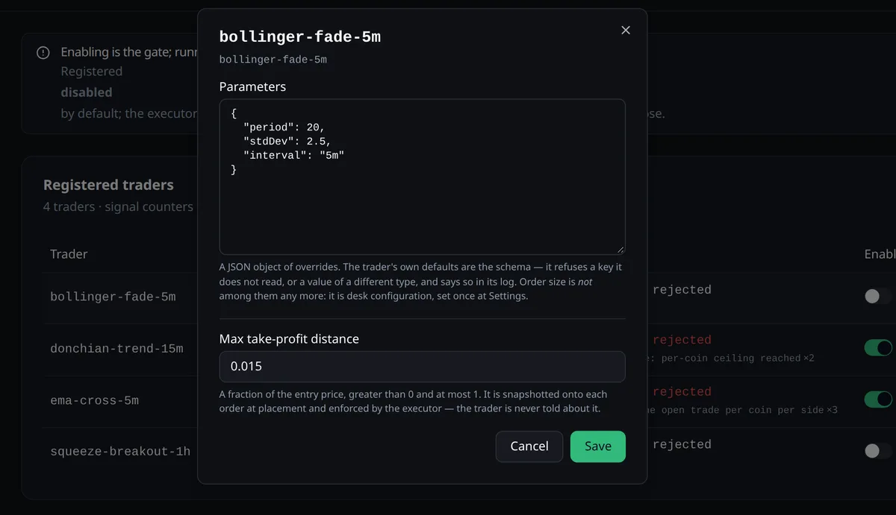

Career portfolio
Case study · Personal project

Automated Crypto-Derivatives Trading System
Signals in, risk-checked orders out.
An event-driven TypeScript system that turns candle signals into risk-checked orders, with every trading limit in one pure function.
01 · The brief
Strategies that can only send signals.
Strategies should be cheap to write and impossible to let loose: they publish signals and nothing else, while one service owns sizing, limits and orders.
- One market-data ingester fetches 1-minute candles and derives every higher timeframe itself
- Strategy processes hold no keys and never size or place orders; they only write signals to their own stream
- One execution service admits, deduplicates and risk-checks each signal before placing orders and tracking fills
- The Next.js dashboard reaches the API server to server, so the browser never holds the access token
02 · How it is built
Streams between processes, one gate before any order.
- Market data
- Ingester1m candles, derived timeframes
- Streams
- Redis StreamsCandles in, signals out
- Strategies
- Trader processesSignals only, no keys
- Execution
- Risk gateOne pure function
- Orders and fillsSingle instance, advisory lock
- Control
- Fastify, tRPCAPI, realtime
- Next.jsDashboard
Stack
Language
- TypeScript
- Node.js
- pnpm
- Turborepo
Services
- Fastify
- tRPC
- Redis Streams
Data
- Prisma
- PostgreSQL
- zod
Frontend
- Next.js
- React
Quality
- Vitest
- Docker Compose
Key decisions
- 01Only the execution service holds exchange keys and places orders
- 02Every limit (sizing, per-coin slots, four exposure ceilings, hedge reserve, margin) sits in one pure risk function shared by the order gate and the settings screen
- 03A priority-laned rate-limit budget keeps order traffic ahead of market data
- 04The wire format is defined once in zod and published as JSON Schema, with a drift test and cross-language parity fixtures
- 05Built with an AI coding-agent workflow I set up: 7 layer-author and 4 read-only auditor agents with fenced responsibilities
03 · My part
What I worked on.
- Event-driven TypeScript monorepo (4 services, 8 shared packages): strategy processes publish signals over Redis Streams to one execution service, the only component that holds exchange keys and places orders.
- Every trading limit (sizing, per-coin slots, four exposure ceilings, hedge reserve, margin) in one pure risk function shared by the order gate and the settings screen; a priority-laned rate-limit budget puts orders ahead of market data.
- Wire format defined once in zod and published as JSON Schema with a drift test and cross-language parity fixtures, so strategies can be written in any language.
- Built with an AI coding-agent workflow I set up: 7 layer-author and 4 read-only auditor agents with fenced responsibilities; 164 test files and 3,810 test cases.
04 · Walkthrough
Inside the product.
Screenshots from a local run on fictional demo data.
Control plane, Next.js dashboard



Core code


4services
8shared packages
3,810test cases
Adding a strategy means writing a signal rule, not touching orders or limits: the risk function and the execution service are the only path to an order.